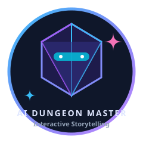
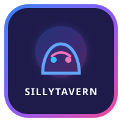
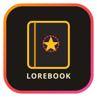
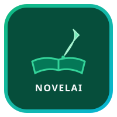

揭開 AI 互動小說與
角色扮演的底層黑盒子
為什麼傳統 RAG 做不出真正動人的互動敘事？
從中介層上下文編排、動態世界書到 Min-P 取樣演算法的端到端技術全景拆解。

為什麼傳統客服式 RAG 撐不起互動小說？
• 時序盲區 (Temporal Anomaly)：純依賴向量相似度。若問「剛才他對你說了什麼？」，容易檢索出 50 回合前某個相似句型，導致時序錯亂崩盤。
• 抹煞情感張力：切塊檢索（Chunking）割裂了對話伏筆、角色微表情與當前氛圍。
• 被動問答思維：只有當使用者發問才檢索，無法在生成小說過程中主動推進情節。
• 時序嚴格敏感：最新對話權重最高，歷史紀錄依時間線性推進。
• 確定性世界觀觸發：依賴正則/關鍵字觸發的 Lorebook，保證重要名詞 100% 精準喚醒，絕不遺漏設定。
• 情緒與人格鎖定：透過 Few-shot 範例對話固定口吻，利用深度注入（Author's Note）維持主線目標。
系統端到端資料流 (End-to-End Pipeline)
中介層上下文編排 (Context Assembly Pipeline)
| 層級順序 | 內容與角色功能 | 關鍵技術目的 |
|---|---|---|
| 1. System Prompt | 第三人稱小說視角、文風渲染指引、防破防規則 | 建立世界的根本物理與文學法則 |
| 2. Character Card | 角色外貌、性格、現狀設定 (`description`, `scenario`) | 確立角色身分與認知範圍 |
| 3. mes_example | 包含心理活動與口癖的少樣本對話 (` |
In-Context Learning 鎖定文風口吻 |
| 4. Author's Note | 在倒數第 2~4 則訊息深度注入 (`@ Depth 3`) | 克服長上下文「迷失在中間」困境 |

SillyTavern Standard
Character Card V2/V3 規範之定義者
動態世界書 (Lorebook) 運作密碼

[亞特蘭提斯] $\rightarrow$ 觸發條目 [亞特蘭提斯] $\rightarrow$ 條目內文含有 [海神三叉戟] $\rightarrow$ 自動連鎖觸發神器條目！完美模擬人類的關聯聯想網。
Min-P 取樣演算法：解放角色情感張力
數學原理：
$$\text{Threshold} = \text{min\_p} \times P(\text{top\_token})$$
不再使用固定的累積機率（Top-P），而是以最高機率的 Token 為基準動態縮放門檻！允許創作者安全將溫度拉高至 1.1 ~ 1.3，徹底根除機械化復讀。
角色扮演系統的四代記憶演進
• 優點：情緒最連貫、原汁原味。
• 缺點：超出窗口即患上嚴重失憶症 (Amnesia)。
• 缺點：情感與細節嚴重流失（將深情對話壓縮成「兩人進行了交流」），失去沉浸感。
• 致命傷：時序錯亂 (Temporal Anomaly)，無法區分事件先後順序，容易答非所問。
開源社群 vs 商業平台特色對比
• 定位：開源中介層與客戶端之王
• 架構特點：完全掌控 Context、全自訂取樣 (Min-P/Mirostat)、外掛生態系 (TTS/立繪/圖生圖)
• 社群驅動：Character Card V2/V3 標準制定者

• 定位：純文學創作與互動小說
• 架構特點：專用文學微調模型 (Kayra/Clio)、工業級 Lorebook 級聯引擎、Context Viewer 上下文透視
• 風格：沉浸式小說續寫而非單純聊天室
• 定位：超高並發大眾商業聊天平台
• 架構特點：自研超低推理成本對話模型、Swipe 重選驅動的 RLHF/DPO 飛輪、對話釘選 (Pin)
• 挑戰：重度安全審查引起的角色靈魂閹割爭議
打造高品質 AI 互動小說系統的四要素
System -> Persona -> Examples -> Lore -> History -> Author's Note 進行嚴格分層排列，並善用 XML/Markdown 標籤防禦提示詞注入。
min_p = 0.05 ~ 0.08 搭配高溫度（T = 1.15 ~ 1.25），讓角色的遣詞用字鮮活多變，擺脫冰冷的機器人說話風格。
Q & A 交流與討論
AI 互動式小說與角色扮演，是大型語言模型在「邏輯推理」之外展現「文學靈魂與情感共鳴」的最前沿實踐。
當優秀的中介層架構、精準世界書與現代取樣演算法結合，AI 才能真正成為一個有血有肉的故事主講人。
包含原始文獻、深度技術概念解析、實體評測與架構全景日誌。